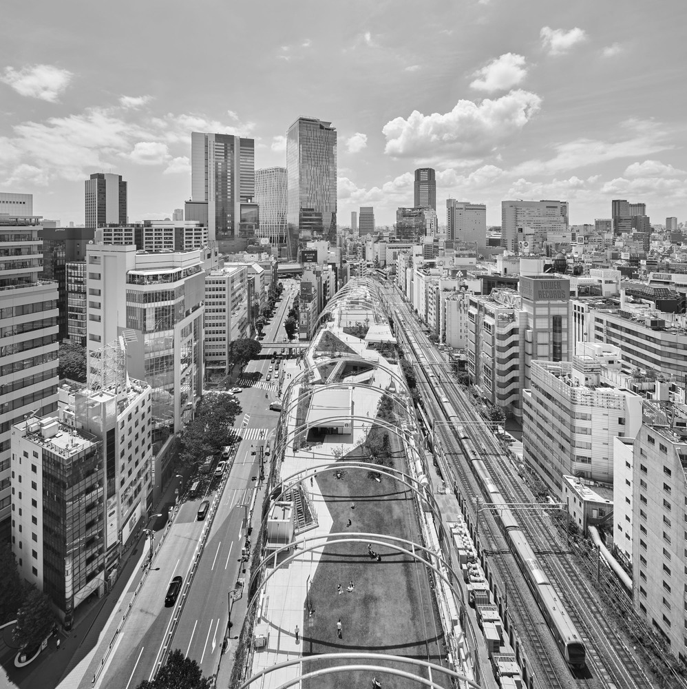
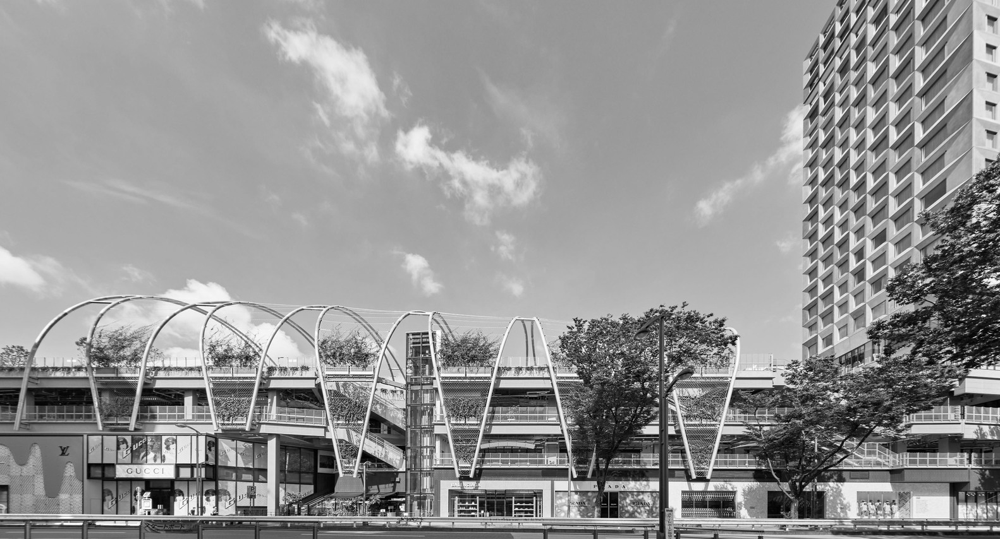
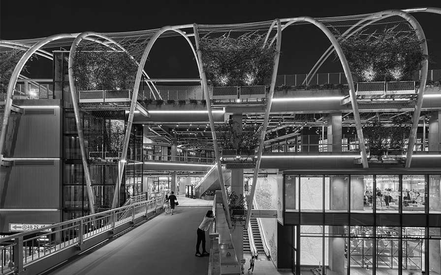

Miyashita Park
미야시타 파크
오늘 첫 번째로 돌아볼 곳 또한 최근 몇 년 사이 새로 생긴 곳인데요. 바로 올림픽을 앞둔 2020년 6월에 오픈한 미야시타 파크가 되겠습니다. 소개에 앞서 잠깐 뉴욕 이야기를 해보자면, 뉴욕의 센트럴파크를 설계한 저명한 공원 설계자, 프레드릭 로 옴스테드는 센트럴파크 조성 당시 "이곳에 공원을 만들지 않는다면 100년 후에는 이만한 크기의 정신병원이 필요할 것이다" 라고 주장했었죠. 이처럼 도심의 공원이 있음으로써 얻을 수 있는 부가효과는 생각보다 막대합니다. 하지만, 이 시부야는 인구밀도를 고려했을 때 다른 도심지들과는 달리 중앙에 공간이 없었습니다. 사실 하나 있긴 했지만, 이곳은 이전에는 단순히 상권의 뒤편에 위치해서 제법 을씨년스러운 분위기를 풍기던 곳입니다. 심지어 그 사이는 아예 기찻길로 단절되어 있었기에 노숙인이 상주하며 속칭 '어둠의 주민들'의 성지가 되었던 곳이었죠. 그랬던 공원이 2020년 도쿄 올림픽 시점에 맞춰 방문객들을 위한 새로운 랜드마크로 재탄생한 것인데요. 비록 도쿄 올림픽의 흥행 자체는 실패로 끝났지만, 미야시타 파크의 리뉴얼은 대성공한 느낌입니다. 기존의 고가공원의 특색은 유지한 채, 층고를 더욱 올려 4층 높이의 상가를 확보하고, 이를 18층 높이의 호텔과 연결하여 기존 상권의 반대편에 새로운 상권을 탄생시킨 것이죠. 내부 또한 인기 있고 개성있는 브랜드들로 꽉 차 있지만, 어디까지나 공원이라는 성격에 맞게 정말 다양한 입구를 통해 들어올 수 있도록, 그리고 자연스럽게 4층까지 도달하도록 만들어져 있죠.


아래에 충분한 상가 공간을 확보한 대신, 예전에 공원에서 볼 수 있었던 나무들이 사라진 것을 볼 수 있는데요. 대신에 나무를 형상화한 듯한 아치형 캐노피와 층마다 자리한 덩굴 식물을 통해 감각적으로 녹지를 조성해 놓았습니다. 단순 관광지로서의 기능뿐 아니라 시부야 근처에 유독 부족하던 도심 속 휴식공간의 역할 또한 충실히 수행하고 있는데요. 실제로도 2주간의 방문자 통계에서도 주말보다는 평일 동안의 방문객이 더 많았고, 이 중에서 시부야구의 직장인 비율이 가장 많았다고 합니다. 물론 관광이 풀린 지금은 주말마다 관광객이 꽉 찬 모습을 볼 수 있는데요. 쇼핑을 마치고 이곳에서 커피 한잔하면 정말 좋을 것 같네요.


